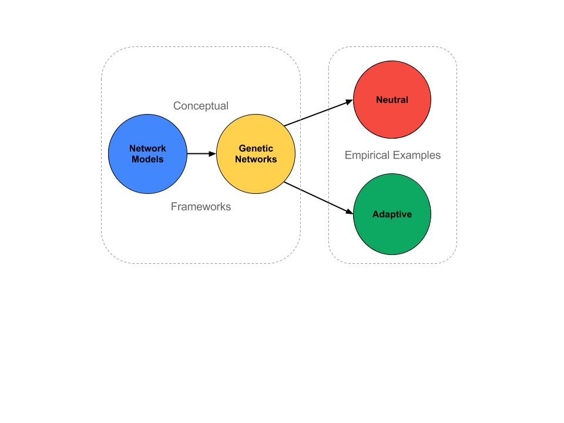
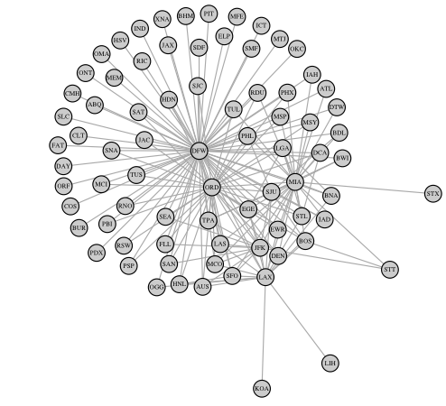
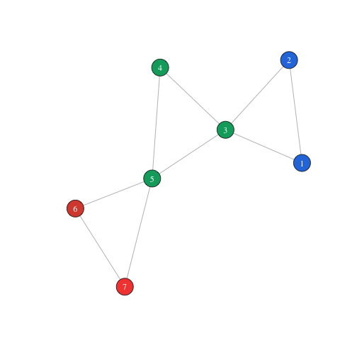
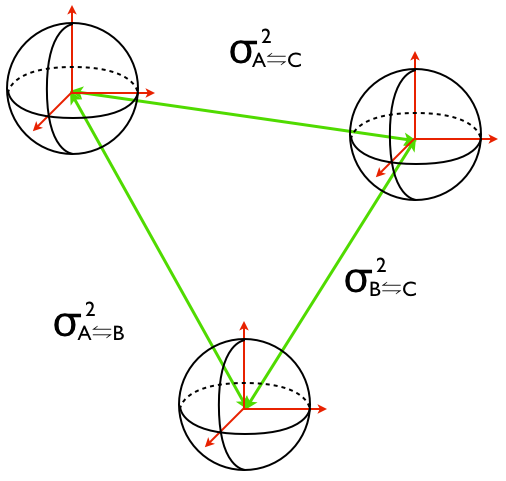
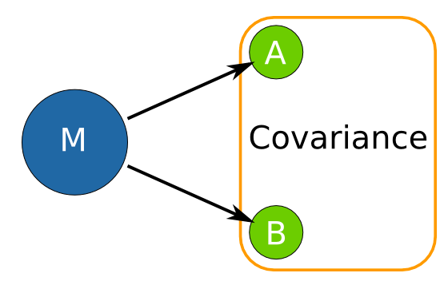
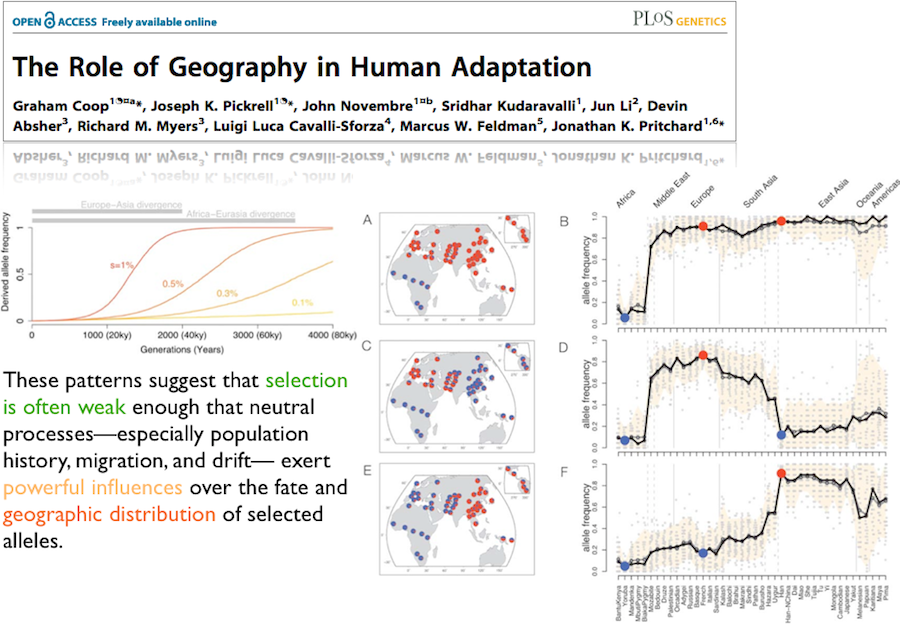
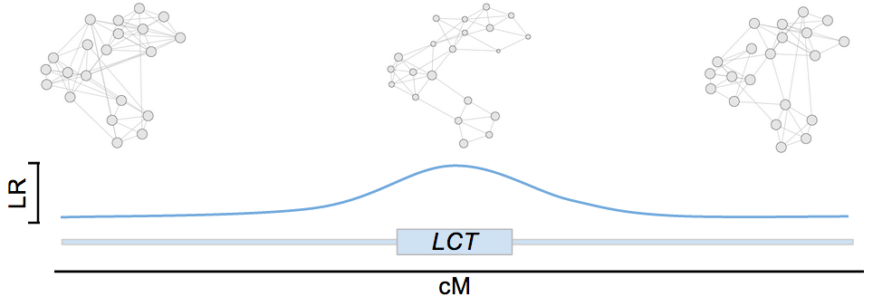

The Shape of Neutral & Adaptive Genetic Variance
Testing "How" instead of "If"
Rodney J. Dyer
Department of Biology, Virginia Commonwealth University
Acknowledgements
The following work has been made possible by the contributions of time and/or funds by the following individuals and groups. Without their input, I would not be here.
People
- Victoria Sork (UCLA), Peter Smouse (Rutgers), John Nason (ISU)
- Ryan Garrick (Ole Miss), Andrew Eckert (VCU)
- Stephen Baker, Dan Carr, Angela Hutto, Crystal Meadows, Stephanie Burgess
- Owen, Janis & Marlo
Organizations
- National Science Foundation (DEB-0543102 & DEB-0640803)
- Virginia HTEF Research Fund (FY2008 & FY2013)
- Virginia Commonwealth University
- Rice Center Research Grant (1342)
- Center for the Study of Biological Complexity
Path of the Talk

Network Models
The Topology of Biological Interactions

The affinities of all beings of the same class have sometimes been represented by a great tree. I believe this simile largely speaks the truth.
C. Darwin
On the Origin of Species
1872 Edition
Network Structure

Spatial Context

Networks in Ecological Thinking
Networks in Evolutionary Thinking

Shape Interest Redirects Focus
Parameter Estimation
Topological Analysis

Genetic Networks
I do not think it means what you think it means.
Adaptive & Neutral Variance
In general, a genome is comprised of two general kinds of sequences:
- Adaptive Variance: The Part that Actually Does Something
- Protein coding
- Regulatory & promoter regions
- xxxRNA
- Neutral Variance: The Rest (aka brother-in-law)
- repeaty regions
- introns
- spacers and jumpy bits
Geometry of Variance
Mulitlocus genetic variance can be defined in a geometric context for both within and between stratum components.
Dyer & Nason. (2004) Molecular Ecology, 13, 1713-1728.

\(\sigma^2_W = \sum_{i=1}^K \sigma_{W,i}^2\)
Within population genetic variance
- Multivariate
- Unique coordinate in HD space
- Volume

\(\sigma_A^2 = \sum_{i \ne j} \sigma_{A,i \leftrightarrow j}^2\)
Pairwise Incompetence
Few useable inferences about underlying demographic model gained from pair-wise approaches.
Dyer (2007) Theoretical Population Biology, 71, 71-79
Dyer et al. (2010) Molecular Ecology, 19, 3746-3759.
Conditional Covariance

Shape of Genetic Covariance
Dyer (2007) Theoretical Population Biology, 71, 71-79.
Shape of Genetic Covariance
Neutral Genetic Structure
The part that doesn't do anything
Real-time Gene Flow
Smouse et al. (2001). Evolution, 55, 260-271.
Dyer et al. (2004) Heredity, 92, 204-211.

Can the shape of pollen pool variation
provide inferences into which landscape features
influencing real-time gene flow?
Study Site
Flowering Dogwood, Cornus florida L.
- Endemic understory tree
- Insect pollinated
- Animal dispersed seeds
- Early season phenology
- Spatial Autocorrelation to 23m
- Pollen pool differentiation: \(\Phi_{FT} = 0.12\)

Pollen Connectivity

Dyer et al. (2013) Landscape Ecology, 27, 239-251
Landscape Features Influencing Connectivity
Dyer et al. (2013) Landscape Ecology, 27, 239-251
Quantification of Disperal Environment
- Open Canopy
- Pine Canopy
- Oak Canopy
- Decid. Canopy
- Dogwood Canopy
- Shrubbery
- Stem density
- Roads & main paths
Ecological Resistance For Dispersal
Shortest Path Distance
Circuit Distance

Adaptive Genetic Structure
The part most people think of


Selection & Genetic Covariance
The shape of genetic covariance among human populations defined by the CEPH SNP dataset.
Neutral Variance
LCT (Chr2)
Can the shape of among-population variation
measured along the chromosome
provide inferences into partitioning
and categorization of genetic variance?
Leveraging A Covariance Approach

- Topological change to deviation from neutral
- Not all outliers are the same
- Hypothesis typologies
| Feature | Trt Means | P(neu=neg) | P(neu=pos) |
|---|---|---|---|
| Degree | Pos < Neu < Neg | \(0.84\) | \(8.68e^{-13}\) |
| Node Btwn | Neu < Neg < Pos | \(0.62\) | \(2.09e-4\) |
| Closeness | Pos < Neg < Neu | \(1.25e^{-7}\) | \(5.20e-12\) |
| cGD | Neu < Neg < Pos | \(1.45e^{-3}\) | \(<2.0e-16\) |
| Edge Btwn | Neu < Neg < Pos | \(0.49\) | \(5.77e-9\) |
| SlopeDegree | Pos < Neu < Neg | \(0.78\) | \(0.88\) |
| Diameter | Neu < Neg < Pos | \(0.24\) | \(2.06e-9\) |
Outliers on Chromosome 2
Simultaneous outliers for all topologically informative parameters.

Putatively Adaptive Buckets: LCT
\(H_O\) Among outliers, what topologies are similar?

Putatively Adaptive Buckets: LCT
Ecologically Motivated Hypothesis Matrix
What elements of genome covary in a way similar to an ecological variable?

Ecologically Motivated Hypothesis Matrix

Distance Congruence between maximum local Temperature and inter-population genetic covariance
Utility of Shape-based Approaches
Focusing on the topology of covariance provides complementary insights.
Neutral Variance
\(H_O:If\) \(\to\) \(H_O:How\).
Magnitude of structure less relevant.
Spatial congruence.
\(\;\) \(\;\) Adaptive Variance
Reduce Type II Error
Negative selection?
Internal clustering
External hypothese